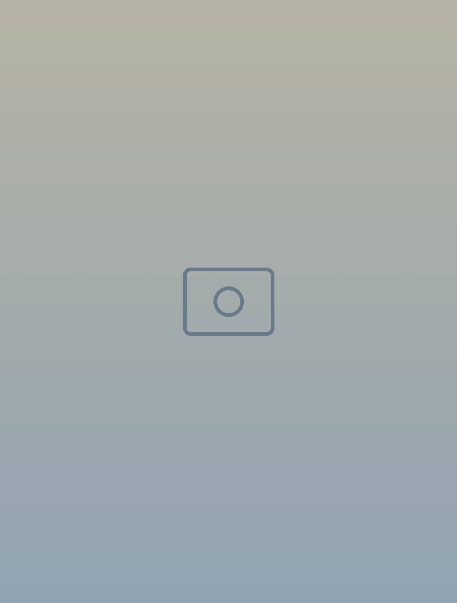
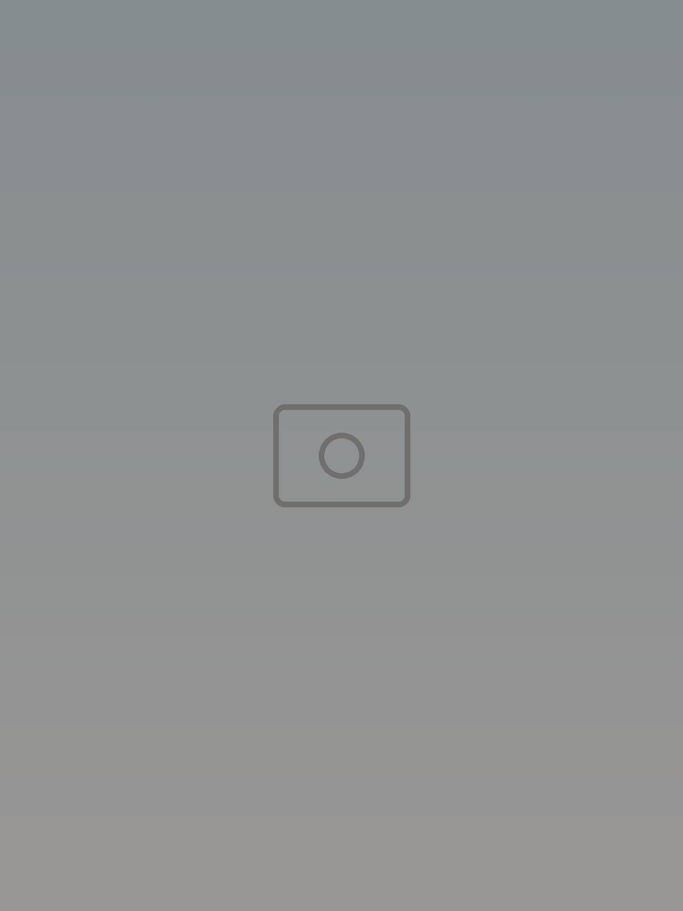
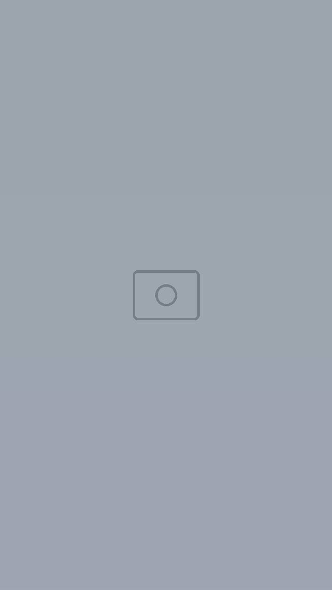
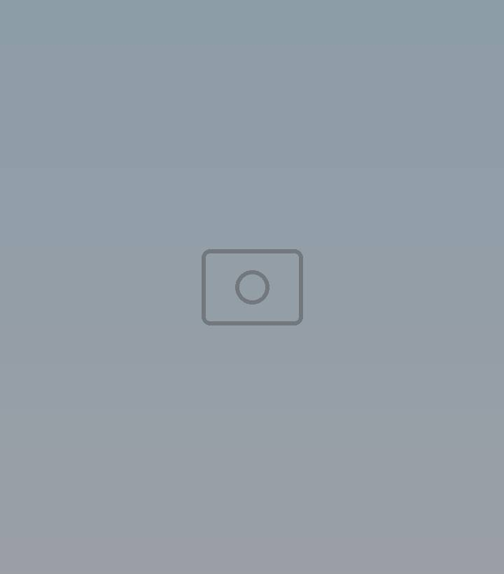
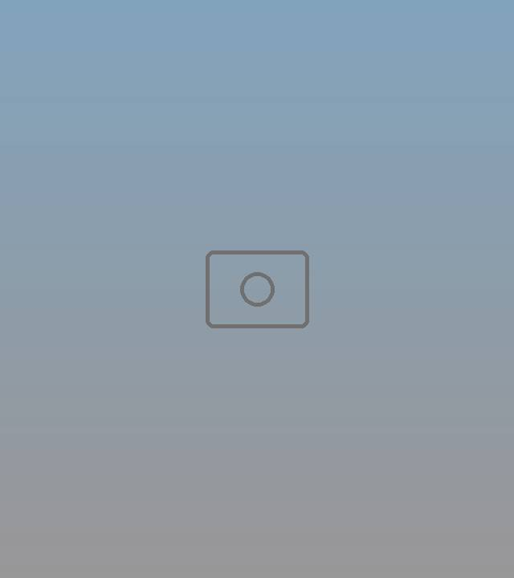
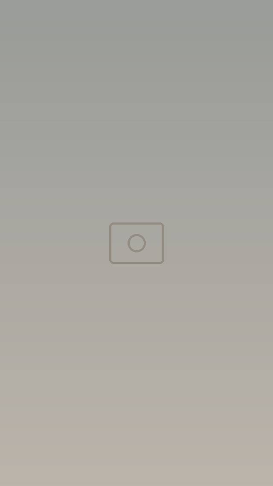
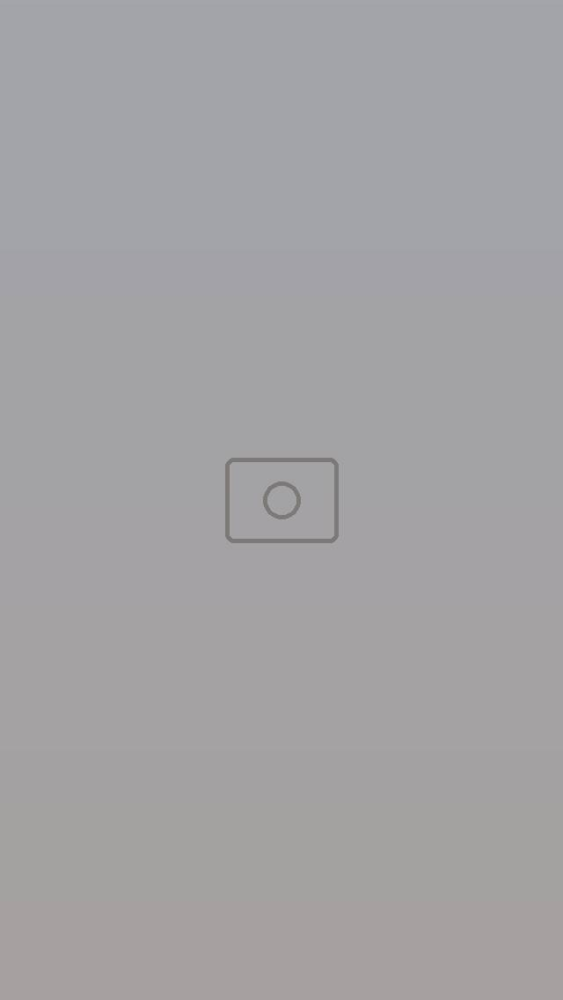
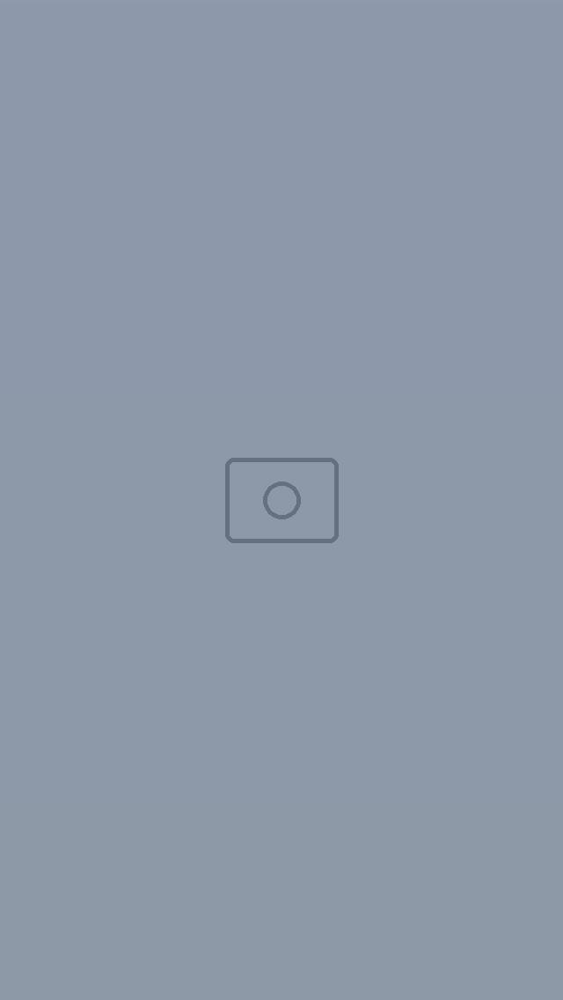
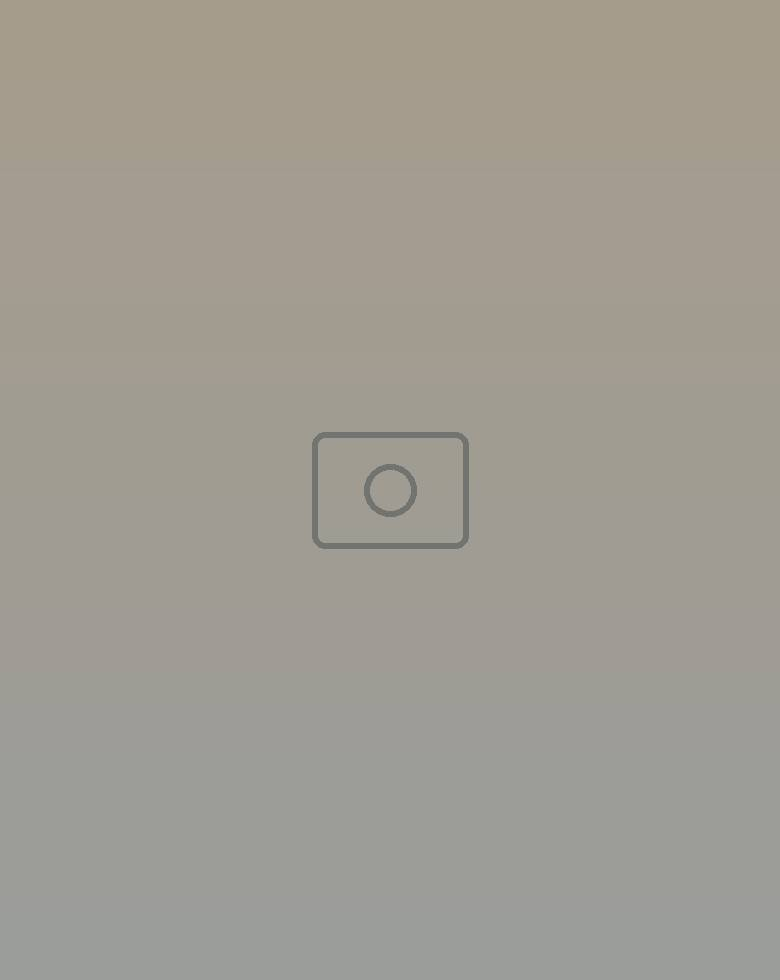

Thé tunisien
À la menthe fraîche, le classique de l'après-midi.
Djerbahood · Erriadh
Un petit salon de thé au cœur du village d'art d'Erriadh. Un thé à la menthe sur les coussins bleus, une citronnade à l'ombre, et les fresques de Djerbahood tout autour.


Thé à la menthe
Le lieu
Café Hanine, que les habitués appellent aussi Café حنين, se cache dans une ruelle de Djerbahood. Une halte idéale pendant la visite du village artistique : on s'installe le long du mur, on reprend son souffle, on regarde passer la calèche.



La carte
Les incontournables de la maison, servis dans la céramique peinte. Demandez la carte du jour sur place.
Café Hanine, c'est le projet d'une passionnée du village d'art d'Erriadh, qui le fait grandir un peu plus chaque saison. Un lieu de rencontre où se croisent voyageurs, artistes et créateurs.
La ruelle




Venir
Djerbahood, village d'Erriadh
Djerba 4146, Médenine
Dans les ruelles d'art de rue du village : suivez les murs bleus et la grande calligraphie dorée.
Ouvrir dans Google MapsHoraires du jour, groupes et shootings : écrivez-nous sur WhatsApp.